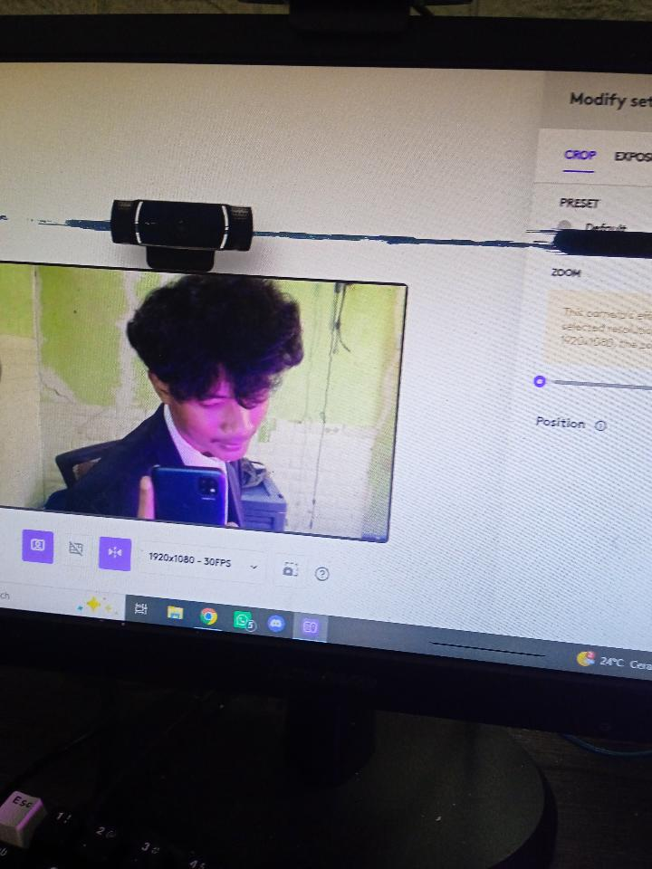
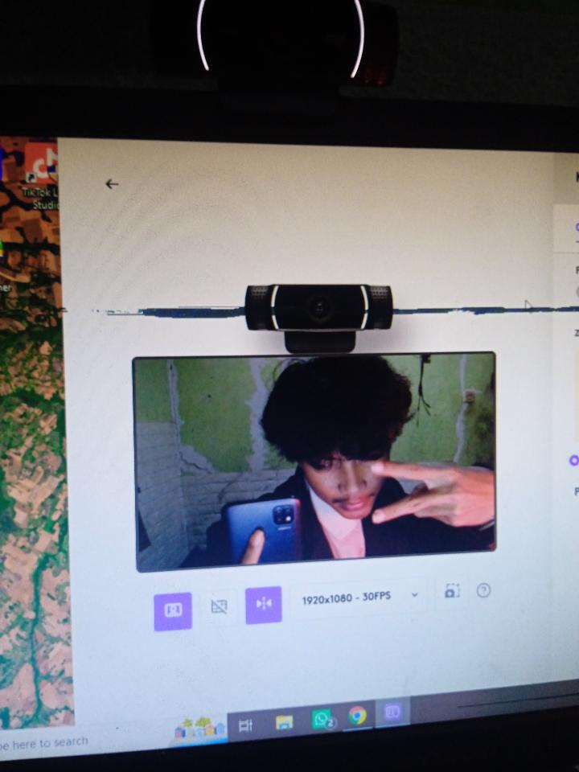
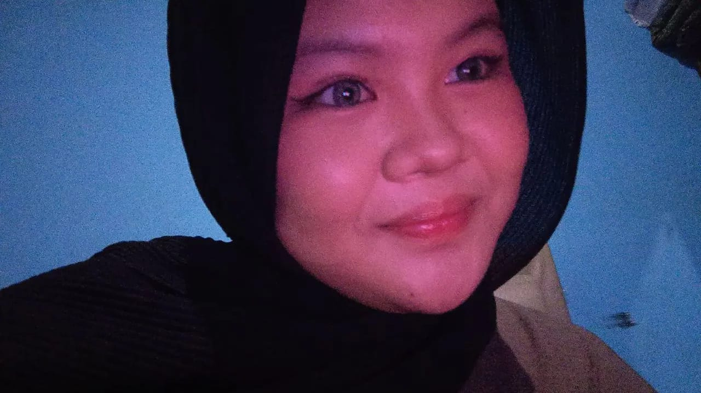

12 September 2026 · first encounter
Pertama kenal di room LM
Awalnya cuma dua orang yang belum tahu kalau pertemuan kecil ini bakal jadi bagian penting dari cerita kita.
a little corner of the internet, made for you
17 · 10 · 2026 · for sayang ♡
One tiny website. So much love behind it.
let's look back ♡Add your own legally obtained song.mp3 inside the assets folder, then press play.
chapter one
Dari room LM, first call, sampai fase belum jadian yang penuh cerita. Ternyata, hal-hal kecil bisa membawa kita sejauh ini.
our little timeline
12 September 2026 · the beginning of our story
12 September 2026 · first encounter
Awalnya cuma dua orang yang belum tahu kalau pertemuan kecil ini bakal jadi bagian penting dari cerita kita.
02 · first call
Entah gimana ceritanya, obrolan pertama itu perlahan berubah jadi rasa nyaman yang pengin diulang lagi.
03 · before we knew it
Fase yang mungkin sederhana, tapi justru menyimpan banyak momen yang sekarang terasa begitu berarti.
04 · still writing
Dan hari ini, kita punya lebih banyak cerita untuk dikenang—serta banyak hal baik yang semoga masih menunggu di depan.
little pieces of us



a letter for you
HAI HAI HAIII SAYANGGGG 🫵🏻🤍
Happyyy birthdayyyy yaaaaaa!! 🥳🤍
Keknya ini nggak seberapa sih hadiahnya, tapiii INI EFFORTTTNYAAA GUEDEEEEE BUANGETTTTT 😭😭 Aku merencanakan ini dari tanggal 20 September 2026, loh. Jadi kalau nanti kamu mikir, “ih apaan sih cuma website,” KAMU SALAH BESAR. Ini dibuat dengan penuh perjuangan, niat, dan waktu yang seharusnya mungkin bisa aku pakai buat rebahan. 😭
Aku nggak tahu pas kamu ulang tahun nanti aku ada di rumah atau lagi di asrama, tapi wherever I am, I just wanna say that I love you so much.
Nggak pernah kebayang kan kalau kita bisa sampai sekarang?
Padahal awalnya kamu kayak cuek gitu, terus entah gimana ceritanya kita bisa sampai di titik ini. Dari pertama kenal di room LM, terus mulai dekat gara-gara first call, sampai akhirnya sekarang kita punya cerita sebanyak ini.
Jujur ya, kenal sama kamu tuh seru banget tauuuu. Kamu juga banyak membantu aku buat berpikir lebih dewasa. Ada banyak hal yang mungkin nggak akan aku lihat dari sudut pandang yang sama kalau aku nggak kenal kamu.
Dan aku seneng banget, anjir, bisa ketemu kamu.
Aku bahkan nggak tau lagi mau ngomong apa karena kalau disuruh menjelaskan kenapa aku seneng ketemu kamu, kayaknya satu halaman pun nggak bakal cukup. INTINYA AKU SENENG BANGETTT JIRRR KETEMU KAMUUU 😭🤍
Plus-nya lagi, aku sayang banget jir sama manusia iniiii.
Aku harap di umur kamu yang sekarang, kamu bisa dapetin banyak hal baik. Semoga semua yang kamu pengenin dan kamu perjuangin bisa satu-satu tercapai. Semoga kamu selalu dikelilingi orang-orang yang sayang sama kamu, dan semoga kamu tetap jadi kamu yang aku kenal sekarang.
Aku juga berharap, di antara banyak banget hal yang bakal terjadi ke depannya, aku masih bisa ada di samping kamu. Nggak harus selalu dalam bentuk yang besar, mungkin cuma nemenin, dengerin cerita kamu, ketawa bareng, atau sekadar jadi orang yang kamu cari ketika kamu butuh seseorang.
Aku nggak tahu nanti perjalanan kita bakal sejauh apa, tapi aku bersyukur banget karena sampai hari ini aku bisa punya kamu di dalam cerita hidup aku.
So, sekali lagi...
HAPPYYYY BIRTHDAYYYYY SAYANGGGG!!! 🎂🤍
Semoga tahun ini jadi salah satu tahun terbaik buat kamu.
And please remember, di balik hadiah kecil ini ada seseorang yang dari tanggal 20 September udah mikirin gimana caranya bikin kamu senyum pas ulang tahun. 🫵🏻
I love you so much. 🤍
— odiee ♡
until the next chapter
See you in every little moment worth remembering.